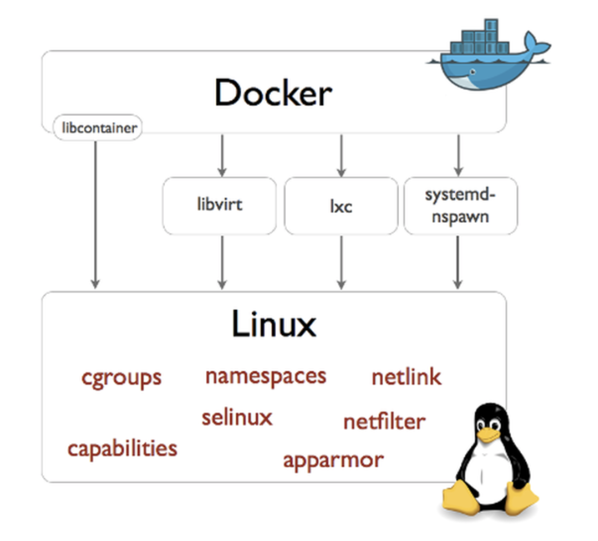

docker 简介
Docker 两个主要部件：
Docker: 开源的容器虚拟化平台 Docker Hub: 用于分享、管理 Docker 容器的 Docker SaaS 平台 -- Docker Hub Docker 使用客户端-服务器 (C/S) 架构模式。Docker 客户端会与 Docker 守护进程进行通信。Docker 守护进程会处理复杂繁重的任务，例如建立、运行、发布你的 Docker 容器。Docker 客户端和守护进程可以运行在同一个系统上，当然你也可以使用 Docker 客户端去连接一个远程的 Docker 守护进程。Docker 客户端和守护进程之间通过 socket 或者 RESTful API 进行通信。
- Docker 守护进程
如上图所示，Docker 守护进程运行在一台主机上。用户并不直接和守护进程进行交互，而是通过 Docker 客户端间接和其通信。
- Docker 客户端
Docker 客户端，实际上是 docker 的二进制程序，是主要的用户与 Docker 交互方式。它接收用户指令并且与背后的 Docker 守护进程通信，如此来回往复。
- Docker 内部
要理解 Docker 内部构建，需要理解以下三种部件：
Docker 镜像 - Docker images
Docker 仓库 - Docker registeries
Docker 容器 - Docker containers
- Docker 镜像
Docker 镜像是 Docker 容器运行时的只读模板，每一个镜像由一系列的层 (layers) 组成。Docker 使用 UnionFS 来将这些层联合到单独的镜像中。UnionFS 允许独立文件系统中的文件和文件夹(称之为分支)被透明覆盖，形成一个单独连贯的文件系统。正因为有了这些层的存在，Docker 是如此的轻量。当你改变了一个 Docker 镜像，比如升级到某个程序到新的版本，一个新的层会被创建。因此，不用替换整个原先的镜像或者重新建立(在使用虚拟机的时候你可能会这么做)，只是一个新的层被添加或升级了。现在你不用重新发布整个镜像，只需要升级，层使得分发 Docker 镜像变得简单和快速。
- Docker 仓库
Docker 仓库用来保存镜像，可以理解为代码控制中的代码仓库。同样的，Docker 仓库也有公有和私有的概念。公有的 Docker 仓库名字是 Docker Hub。Docker Hub 提供了庞大的镜像集合供使用。这些镜像可以是自己创建，或者在别人的镜像基础上创建。Docker 仓库是 Docker 的分发部分。
- Docker 容器
Docker 容器和文件夹很类似，一个Docker容器包含了所有的某个应用运行所需要的环境。每一个 Docker 容器都是从 Docker 镜像创建的。Docker 容器可以运行、开始、停止、移动和删除。每一个 Docker 容器都是独立和安全的应用平台，Docker 容器是 Docker 的运行部分。
- libcontainer
Docker 从 0.9 版本开始使用 libcontainer 替代 lxc，libcontainer 和 Linux 系统的交互图如下：

-
命名空间「Namespaces」
-
pid namespace
不同用户的进程就是通过 pid namespace 隔离开的，且不同 namespace 中可以有相同 PID。具有以下特征:
每个 namespace 中的 pid 是有自己的 pid=1 的进程(类似 /sbin/init 进程) 每个 namespace 中的进程只能影响自己的同一个 namespace 或子 namespace 中的进程 因为 /proc 包含正在运行的进程，因此在 container 中的 pseudo-filesystem 的 /proc 目录只能看到自己 namespace 中的进程 因为 namespace 允许嵌套，父 namespace 可以影响子 namespace 的进程，所以子 namespace 的进程可以在父 namespace 中看到，但是具有不同的 pid
- mnt namespace
类似 chroot，将一个进程放到一个特定的目录执行。mnt namespace 允许不同 namespace 的进程看到的文件结构不同，这样每个 namespace 中的进程所看到的文件目录就被隔离开了。同 chroot 不同，每个 namespace 中的 container 在 /proc/mounts 的信息只包含所在 namespace 的 mount point。
- net namespace
网络隔离是通过 net namespace 实现的， 每个 net namespace 有独立的 network devices, IP addresses, IP routing tables, /proc/net 目录。这样每个 container 的网络就能隔离开来。 docker 默认采用 veth 的方式将 container 中的虚拟网卡同 host 上的一个 docker bridge 连接在一起。
- uts namespace
UTS ("UNIX Time-sharing System") namespace 允许每个 container 拥有独立的 hostname 和 domain name, 使其在网络上可以被视作一个独立的节点而非 Host 上的一个进程。
- ipc namespace
container 中进程交互还是采用 Linux 常见的进程间交互方法 (interprocess communication - IPC), 包括常见的信号量、消息队列和共享内存。然而同 VM 不同，container 的进程间交互实际上还是 host 上具有相同 pid namespace 中的进程间交互，因此需要在IPC资源申请时加入 namespace 信息 - 每个 IPC 资源有一个唯一的 32bit ID。
- user namespace
每个 container 可以有不同的 user 和 group id, 也就是说可以以 container 内部的用户在 container 内部执行程序而非 Host 上的用户。
有了以上 6 种 namespace 从进程、网络、IPC、文件系统、UTS 和用户角度的隔离，一个 container 就可以对外展现出一个独立计算机的能力，并且不同 container 从 OS 层面实现了隔离。 然而不同 namespace 之间资源还是相互竞争的，仍然需要类似 ulimit 来管理每个 container 所能使用的资源 - cgroup。
- 资源配额「cgroups」
cgroups 实现了对资源的配额和度量。 cgroups 的使用非常简单，提供类似文件的接口，在 /cgroup 目录下新建一个文件夹即可新建一个 group，在此文件夹中新建 task 文件，并将 pid 写入该文件，即可实现对该进程的资源控制。具体的资源配置选项可以在该文件夹中新建子 subsystem ，{子系统前缀}.{资源项} 是典型的配置方法， 如 memory.usage_in_bytes 就定义了该 group 在 subsystem memory 中的一个内存限制选项。 另外，cgroups 中的 subsystem 可以随意组合，一个 subsystem 可以在不同的 group 中，也可以一个 group 包含多个 subsystem - 也就是说一个 subsystem。
- memory
- 内存相关的限制
- cpu
- 在 cgroup 中，并不能像硬件虚拟化方案一样能够定义 CPU 能力，但是能够定义 CPU 轮转的优先级，因此具有较高 CPU 优先级的进程会更可能得到 CPU 运算。 通过将参数写入 cpu.shares ,即可定义改 cgroup 的 CPU 优先级 - 这里是一个相对权重，而非绝对值
- blkio
- block IO 相关的统计和限制，byte/operation 统计和限制 (IOPS 等)，读写速度限制等，但是这里主要统计的都是同步 IO
- devices
- 设备权限限制
docker基础用法
Docker HUB : Docker镜像首页，包括官方镜像和其它公开镜像 因为国情的原因，国内下载 Docker HUB 官方的相关镜像比较慢，可以使用 Daocloud 镜像加速。
- Search images
$ sudo docker search ubuntu
- Pull images
$ sudo docker pull ubuntu # 获取 ubuntu 官方镜像
$ sudo docker images # 查看当前镜像列表
- Running an interactive shell
$ sudo docker run -i -t ubuntu:14.04 /bin/bash
docker run - 运行一个容器
-t - 分配一个（伪）tty (link is external)
-i - 交互模式 (so we can interact with it)
ubuntu:14.04 - 使用 ubuntu 基础镜像 14.04
/bin/bash - 运行命令 bash shell
注: ubuntu 会有多个版本，通过指定 tag 来启动特定的版本 [image]:[tag]
$ sudo docker ps # 查看当前运行的容器, ps -a 列出当前系统所有的容器
CONTAINER ID IMAGE COMMAND CREATED STATUS PORTS NAMES
6c9129e9df10 ubuntu:14.04 /bin/bash 6 minutes ago Up 6 minutes
- 相关快捷键
退出：Ctrl-D or exit
detach：Ctrl-P + Ctrl-Q
attach: docker attach CONTAINER-ID
Docker 命令帮助
- docker help
- docker command
$ sudo docker # docker 命令帮助
Commands:
attach Attach to a running container # 当前 shell 下 attach 连接指定运行镜像
build Build an image from a Dockerfile # 通过 Dockerfile 定制镜像
commit Create a new image from a container's changes # 提交当前容器为新的镜像
cp Copy files/folders from the containers filesystem to the host path
# 从容器中拷贝指定文件或者目录到宿主机中
create Create a new container # 创建一个新的容器，同 run，但不启动容器
diff Inspect changes on a container's filesystem # 查看 docker 容器变化
events Get real time events from the server # 从 docker 服务获取容器实时事件
exec Run a command in an existing container # 在已存在的容器上运行命令
export Stream the contents of a container as a tar archive
# 导出容器的内容流作为一个 tar 归档文件[对应 import ]
history Show the history of an image # 展示一个镜像形成历史
images List images # 列出系统当前镜像
import Create a new filesystem image from the contents of a tarball
# 从tar包中的内容创建一个新的文件系统映像[对应 export]
info Display system-wide information # 显示系统相关信息
inspect Return low-level information on a container # 查看容器详细信息
kill Kill a running container # kill 指定 docker 容器
load Load an image from a tar archive # 从一个 tar 包中加载一个镜像[对应 save]
login Register or Login to the docker registry server
# 注册或者登陆一个 docker 源服务器
logout Log out from a Docker registry server # 从当前 Docker registry 退出
logs Fetch the logs of a container # 输出当前容器日志信息
port Lookup the public-facing port which is NAT-ed to PRIVATE_PORT
# 查看映射端口对应的容器内部源端口
pause Pause all processes within a container # 暂停容器
ps List containers # 列出容器列表
pull Pull an image or a repository from the docker registry server
# 从docker镜像源服务器拉取指定镜像或者库镜像
push Push an image or a repository to the docker registry server
# 推送指定镜像或者库镜像至docker源服务器
restart Restart a running container # 重启运行的容器
rm Remove one or more containers # 移除一个或者多个容器
rmi Remove one or more images
# 移除一个或多个镜像[无容器使用该镜像才可删除，否则需删除相关容器才可继续或 -f 强制删除]
run Run a command in a new container
# 创建一个新的容器并运行一个命令
save Save an image to a tar archive # 保存一个镜像为一个 tar 包[对应 load]
search Search for an image on the Docker Hub # 在 docker hub 中搜索镜像
start Start a stopped containers # 启动容器
stop Stop a running containers # 停止容器
tag Tag an image into a repository # 给源中镜像打标签
top Lookup the running processes of a container # 查看容器中运行的进程信息
unpause Unpause a paused container # 取消暂停容器
version Show the docker version information # 查看 docker 版本号
wait Block until a container stops, then print its exit code
# 截取容器停止时的退出状态值
Run 'docker COMMAND --help' for more information on a command.
- docker option
Usage of docker:
--api-enable-cors=false Enable CORS headers in the remote API # 远程 API 中开启 CORS 头
-b, --bridge="" Attach containers to a pre-existing network bridge # 桥接网络
use 'none' to disable container networking
--bip="" Use this CIDR notation address for the network bridge's IP, not compatible with -b
# 和 -b 选项不兼容，具体没有测试过
-d, --daemon=false Enable daemon mode # daemon 模式
-D, --debug=false Enable debug mode # debug 模式
--dns=[] Force docker to use specific DNS servers # 强制 docker 使用指定 dns 服务器
--dns-search=[] Force Docker to use specific DNS search domains # 强制 docker 使用指定 dns 搜索域
-e, --exec-driver="native" Force the docker runtime to use a specific exec driver # 强制 docker 运行时使用指定执行驱动器
--fixed-cidr="" IPv4 subnet for fixed IPs (ex: 10.20.0.0/16)
this subnet must be nested in the bridge subnet (which is defined by -b or --bip)
-G, --group="docker" Group to assign the unix socket specified by -H when running in daemon mode
use '' (the empty string) to disable setting of a group
-g, --graph="/var/lib/docker" Path to use as the root of the docker runtime # 容器运行的根目录路径
-H, --host=[] The socket(s) to bind to in daemon mode # daemon 模式下 docker 指定绑定方式[tcp or 本地 socket]
specified using one or more tcp://host:port, unix:///path/to/socket, fd://* or fd://socketfd.
--icc=true Enable inter-container communication # 跨容器通信
--insecure-registry=[] Enable insecure communication with specified registries (no certificate verification for HTTPS and enable HTTP fallback) (e.g., localhost:5000 or 10.20.0.0/16)
--ip="0.0.0.0" Default IP address to use when binding container ports # 指定监听地址，默认所有 ip
--ip-forward=true Enable net.ipv4.ip_forward # 开启转发
--ip-masq=true Enable IP masquerading for bridge's IP range
--iptables=true Enable Docker's addition of iptables rules # 添加对应 iptables 规则
--mtu=0 Set the containers network MTU # 设置网络 mtu
if no value is provided: default to the default route MTU or 1500 if no default route is available
-p, --pidfile="/var/run/docker.pid" Path to use for daemon PID file # 指定 pid 文件位置
--registry-mirror=[] Specify a preferred Docker registry mirror
-s, --storage-driver="" Force the docker runtime to use a specific storage driver # 强制 docker 运行时使用指定存储驱动
--selinux-enabled=false Enable selinux support # 开启 selinux 支持
--storage-opt=[] Set storage driver options # 设置存储驱动选项
--tls=false Use TLS; implied by tls-verify flags # 开启 tls
--tlscacert="/root/.docker/ca.pem" Trust only remotes providing a certificate signed by the CA given here
--tlscert="/root/.docker/cert.pem" Path to TLS certificate file # tls 证书文件位置
--tlskey="/root/.docker/key.pem" Path to TLS key file # tls key 文件位置
--tlsverify=false Use TLS and verify the remote (daemon: verify client, client: verify daemon) # 使用 tls 并确认远程控制主机
-v, --version=false Print version information and quit
- docker search
$ sudo docker search --help
Usage: docker search TERM
Search the Docker Hub for images # 从 Docker Hub 搜索镜像
--automated=false Only show automated builds
--no-trunc=false Don't truncate output
-s, --stars=0 Only displays with at least xxx stars
示例：
$ sudo docker search -s 100 ubuntu
# 查找 star 数至少为 100 的镜像，找出只有官方镜像 start 数超过 100，默认不加 s 选项找出所有相关 ubuntu 镜像
NAME DESCRIPTION STARS OFFICIAL AUTOMATED
ubuntu Official Ubuntu base image 425 [OK]
- docker info
$ sudo docker info
Containers: 1 # 容器个数
Images: 22 # 镜像个数
Storage Driver: devicemapper # 存储驱动
Pool Name: docker-8:17-3221225728-pool
Pool Blocksize: 65.54 kB
Data file: /data/docker/devicemapper/devicemapper/data
Metadata file: /data/docker/devicemapper/devicemapper/metadata
Data Space Used: 1.83 GB
Data Space Total: 107.4 GB
Metadata Space Used: 2.191 MB
Metadata Space Total: 2.147 GB
Library Version: 1.02.84-RHEL7 (2014-03-26)
Execution Driver: native-0.2 # 存储驱动
Kernel Version: 3.10.0-123.el7.x86_64
Operating System: CentOS Linux 7 (Core)
- docker pull && docker push
$ sudo docker pull --help # pull 拉取镜像
Usage: docker pull [OPTIONS] NAME[:TAG]
Pull an image or a repository from the registry
-a, --all-tags=false Download all tagged images in the repository
$ sudo docker push # push 推送指定镜像
Usage: docker push NAME[:TAG]
Push an image or a repository to the registry
示例：
$ sudo docker pull ubuntu # 下载官方 ubuntu docker 镜像，默认下载所有 ubuntu 官方库镜像
$ sudo docker pull ubuntu:14.04 # 下载指定版本 ubuntu 官方镜像
$ sudo docker push 192.168.0.100:5000/ubuntu
# 推送镜像库到私有源[可注册 docker 官方账户，推送到官方自有账户]
$ sudo docker push 192.168.0.100:5000/ubuntu:14.04
# 推送指定镜像到私有源
- docker images
列出当前系统镜像
$ sudo docker images --help
Usage: docker images [OPTIONS] [NAME]
List images
-a, --all=false Show all images (by default filter out the intermediate image layers)
# -a 显示当前系统的所有镜像，包括过渡层镜像，默认 docker images 显示最终镜像，不包括过渡层镜像
-f, --filter=[] Provide filter values (i.e. 'dangling=true')
--no-trunc=false Don't truncate output
-q, --quiet=false Only show numeric IDs
示例：
$ sudo docker images # 显示当前系统镜像，不包括过渡层镜像
$ sudo docker images -a # 显示当前系统所有镜像，包括过渡层镜像
$ sudo docker images ubuntu # 显示当前系统 docker ubuntu 库中的所有镜像
REPOSITORY TAG IMAGE ID CREATED VIRTUAL SIZE
ubuntu 12.04 ebe4be4dd427 4 weeks ago 210.6 MB
ubuntu 14.04 e54ca5efa2e9 4 weeks ago 276.5 MB
ubuntu 14.04-ssh 6334d3ac099a 7 weeks ago 383.2 MB
- docker rmi
删除一个或者多个镜像
$ sudo docker rmi --help
Usage: docker rmi IMAGE [IMAGE...]
Remove one or more images
-f, --force=false Force removal of the image # 强制移除镜像不管是否有容器使用该镜像
--no-prune=false Do not delete untagged parents # 不要删除未标记的父镜像
- docker run
$ sudo docker run --help
Usage: docker run [OPTIONS] IMAGE [COMMAND] [ARG...]
Run a command in a new container
-a, --attach=[] Attach to stdin, stdout or stderr.
-c, --cpu-shares=0 CPU shares (relative weight) # 设置 cpu 使用权重
--cap-add=[] Add Linux capabilities
--cap-drop=[] Drop Linux capabilities
--cidfile="" Write the container ID to the file # 把容器 id 写入到指定文件
--cpuset="" CPUs in which to allow execution (0-3, 0,1) # cpu 绑定
-d, --detach=false Detached mode: Run container in the background, print new container id # 后台运行容器
--device=[] Add a host device to the container (e.g. --device=/dev/sdc:/dev/xvdc)
--dns=[] Set custom dns servers # 设置 dns
--dns-search=[] Set custom dns search domains # 设置 dns 域搜索
-e, --env=[] Set environment variables # 定义环境变量
--entrypoint="" Overwrite the default entrypoint of the image # ？
--env-file=[] Read in a line delimited file of ENV variables # 从指定文件读取变量值
--expose=[] Expose a port from the container without publishing it to your host # 指定对外提供服务端口
-h, --hostname="" Container host name # 设置容器主机名
-i, --interactive=false Keep stdin open even if not attached # 保持标准输出开启即使没有 attached
--link=[] Add link to another container (name:alias) # 添加链接到另外一个容器
--lxc-conf=[] (lxc exec-driver only) Add custom lxc options --lxc-conf="lxc.cgroup.cpuset.cpus = 0,1"
-m, --memory="" Memory limit (format: <number><optional unit>, where unit = b, k, m or g) # 内存限制
--name="" Assign a name to the container # 设置容器名
--net="bridge" Set the Network mode for the container # 设置容器网络模式
'bridge': creates a new network stack for the container on the docker bridge
'none': no networking for this container
'container:<name|id>': reuses another container network stack
'host': use the host network stack inside the container. Note: the host mode gives the container full access to local system services such as D-bus and is therefore considered insecure.
-P, --publish-all=false Publish all exposed ports to the host interfaces # 自动映射容器对外提供服务的端口
-p, --publish=[] Publish a container's port to the host # 指定端口映射
format: ip:hostPort:containerPort | ip::containerPort | hostPort:containerPort
(use 'docker port' to see the actual mapping)
--privileged=false Give extended privileges to this container # 提供更多的权限给容器
--restart="" Restart policy to apply when a container exits (no, on-failure[:max-retry], always)
--rm=false Automatically remove the container when it exits (incompatible with -d) # 如果容器退出自动移除和 -d 选项冲突
--security-opt=[] Security Options
--sig-proxy=true Proxify received signals to the process (even in non-tty mode). SIGCHLD is not proxied.
-t, --tty=false Allocate a pseudo-tty # 分配伪终端
-u, --user="" Username or UID # 指定运行容器的用户 uid 或者用户名
-v, --volume=[] Bind mount a volume (e.g., from the host: -v /host:/container, from docker: -v /container)
# 挂载卷
--volumes-from=[] Mount volumes from the specified container(s) # 从指定容器挂载卷
-w, --workdir="" Working directory inside the container # 指定容器工作目录
示例：
$ sudo docker images ubuntu
REPOSITORY TAG IMAGE ID CREATED VIRTUAL SIZE
ubuntu 14.04 e54ca5efa2e9 4 weeks ago 276.5 MB
... ...
$ sudo docker run -t -i -c 100 -m 512MB -h test1 -d --name="docker_test1" ubuntu /bin/bash
# 创建一个 cpu 优先级为 100，内存限制 512MB，主机名为 test1，名为 docker_test1 后台运行 bash 的容器
a424ca613c9f2247cd3ede95adfbaf8d28400cbcb1d5f9b69a7b56f97b2b52e5
$ sudo docker ps
CONTAINER ID IMAGE COMMAND CREATED STATUS PORTS NAMES
a424ca613c9f ubuntu:14.04 /bin/bash 6 seconds ago Up 5 seconds docker_test1
$ sudo docker attach docker_test1
root@test1:/# pwd
/
root@test1:/# exit
exit
- docker start|stop|kill... ...
docker start|stop|kill|restart|pause|unpause|rm|commit|inspect|logs
docker start CONTAINER [CONTAINER...]
# 运行一个或多个停止的容器
docker stop CONTAINER [CONTAINER...]
# 停掉一个或多个运行的容器 -t 选项可指定超时时间
docker kill [OPTIONS] CONTAINER [CONTAINER...]
# 默认 kill 发送 SIGKILL 信号 -s 可以指定发送 kill 信号类型
docker restart [OPTIONS] CONTAINER [CONTAINER...]
# 重启一个或多个运行的容器 -t 选项可指定超时时间
docker pause CONTAINER
# 暂停一个容器，方便 commit
docker unpause CONTAINER
# 继续暂停的容器
docker rm [OPTIONS] CONTAINER [CONTAINER...]
# 移除一个或多个容器
-f, --force=false Force removal of running container
-l, --link=false Remove the specified link and not the underlying container
-v, --volumes=false Remove the volumes associated with the container
docker commit [OPTIONS] CONTAINER [REPOSITORY[:TAG]]
# 提交指定容器为镜像
-a, --author="" Author (e.g., "John Hannibal Smith hannibal@a-team.com")
-m, --message="" Commit message
-p, --pause=true Pause container during commit
# 默认 commit 是暂停状态
docker inspect CONTAINER|IMAGE [CONTAINER|IMAGE...]
# 查看容器或者镜像的详细信息
docker logs CONTAINER
# 输出指定容器日志信息
-f, --follow=false Follow log output
# 类似 tail -f
-t, --timestamps=false Show timestamps
--tail="all" Output the specified number of lines at the end of logs (defaults to all logs)
-
Docker 1.3 新增特性和命令
-
Digital Signature Verification
Docker 1.3 版本将使用数字签名自动验证所有官方库的来源和完整性，如果一个官方镜像被篡改或者被破坏，目前 Docker 只会对这种情况发出警告而并不阻止容器的运行。
- Inject new processes with docker exec
docker exec --help
Usage: docker exec [OPTIONS] CONTAINER COMMAND [ARG...]
Run a command in an existing container
-d, --detach=false Detached mode: run command in the background
-i, --interactive=false Keep STDIN open even if not attached
-t, --tty=false Allocate a pseudo-TTY
为了简化调试，可以使用 docker exec 命令通过 Docker API 和 CLI 在运行的容器上运行程序。
$ docker exec -it ubuntu_bash bash
上例将在容器 ubuntu_bash 中创建一个新的 Bash 会话。
- Tune container lifecycles with docker create
我们可以通过 docker run
$ docker create -t -i fedora bash
6d8af538ec541dd581ebc2a24153a28329acb5268abe5ef868c1f1a261221752
上例创建了一个可写的容器层 (并且打印出容器 ID)，但是并不运行它，可以使用以下命令运行该容器：
$ docker start -a -i 6d8af538ec5
bash-4.2#
- Security Options
通过 --security-opt 选项，运行容器时用户可自定义 SELinux 和 AppArmor 卷标和配置。
$ docker run --security-opt label:type:svirt_apache -i -t centos \ bash
上例只允许容器监听在 Apache 端口，这个选项的好处是用户不需要运行 docker 的时候指定 --privileged 选项，降低安全风险。
- Docker 1.5 新特性
参考文档：http://dockerone.com/article/202
Docker 端口映射
# Find IP address of container with ID <container_id> 通过容器 id 获取 ip
$ sudo docker inspect <container_id> | grep IPAddress | cut -d ’"’ -f 4
无论如何，这些 ip 是基于本地系统的并且容器的端口非本地主机是访问不到的。此外，除了端口只能本地访问外，对于容器的另外一个问题是这些 ip 在容器每次启动的时候都会改变。
Docker 解决了容器的这两个问题，并且给容器内部服务的访问提供了一个简单而可靠的方法。Docker 通过端口绑定主机系统的接口，允许非本地客户端访问容器内部运行的服务。为了简便的使得容器间通信，Docker 提供了这种连接机制。
- 自动映射端口
-P 使用时需要指定 --expose 选项，指定需要对外提供服务的端口
$ sudo docker run -t -P --expose 22 --name server ubuntu:14.04
使用 docker run -P 自动绑定所有对外提供服务的容器端口，映射的端口将会从没有使用的端口池中 (49000..49900) 自动选择，你可以通过 docker ps 、docker inspect
- 绑定端口到指定接口
基本语法
$ sudo docker run -p [([<host_interface>:[host_port]])|(<host_port>):]<container_port>[/udp] <image> <cmd>
默认不指定绑定 ip 则监听所有网络接口。
- 绑定 TCP 端口
# Bind TCP port 8080 of the container to TCP port 80 on 127.0.0.1 of the host machine.
$ sudo docker run -p 127.0.0.1:80:8080 <image> <cmd>
# Bind TCP port 8080 of the container to a dynamically allocated TCP port on 127.0.0.1 of the host machine.
$ sudo docker run -p 127.0.0.1::8080 <image> <cmd>
# Bind TCP port 8080 of the container to TCP port 80 on all available interfaces of the host machine.
$ sudo docker run -p 80:8080 <image> <cmd>
# Bind TCP port 8080 of the container to a dynamically allocated TCP port on all available interfaces
$ sudo docker run -p 8080 <image> <cmd>
- 绑定 UDP 端口
# Bind UDP port 5353 of the container to UDP port 53 on 127.0.0.1 of the host machine.
$ sudo docker run -p 127.0.0.1:53:5353/udp <image> <cmd>
Docker 网络配置
Dokcer 通过使用 Linux 桥接提供容器之间的通信，docker0 桥接接口的目的就是方便 Docker 管理。当 Docker daemon 启动时需要做以下操作：
creates the docker0 bridge if not present
# 如果 docker0 不存在则创建
searches for an IP address range which doesn’t overlap with an existing route
# 搜索一个与当前路由不冲突的 ip 段
picks an IP in the selected range
# 在确定的范围中选择 ip
assigns this IP to the docker0 bridge
# 绑定 ip 到 docker0
- Docker 四种网络模式
四种网络模式摘自:http://www.infoq.com/cn/articles/docker-network-and-pipework-open-source-explanation-practice
docker run 创建 Docker 容器时，可以用 --net 选项指定容器的网络模式，Docker 有以下 4 种网络模式：
host 模式，使用 --net=host 指定。
container 模式，使用 --net=container:NAME_or_ID 指定。
none 模式，使用 --net=none 指定。
bridge 模式，使用 --net=bridge 指定，默认设置。
- host 模式
如果启动容器的时候使用 host 模式，那么这个容器将不会获得一个独立的 Network Namespace，而是和宿主机共用一个 Network Namespace。容器将不会虚拟出自己的网卡，配置自己的 IP 等，而是使用宿主机的 IP 和端口。
例如，我们在 10.10.101.105/24 的机器上用 host 模式启动一个含有 web 应用的 Docker 容器，监听 tcp 80 端口。当我们在容器中执行任何类似 ifconfig 命令查看网络环境时，看到的都是宿主机上的信息。而外界访问容器中的应用，则直接使用 10.10.101.105:80 即可，不用任何 NAT 转换，就如直接跑在宿主机中一样。但是，容器的其他方面，如文件系统、进程列表等还是和宿主机隔离的。
- container 模式
这个模式指定新创建的容器和已经存在的一个容器共享一个 Network Namespace，而不是和宿主机共享。新创建的容器不会创建自己的网卡，配置自己的 IP，而是和一个指定的容器共享 IP、端口范围等。同样，两个容器除了网络方面，其他的如文件系统、进程列表等还是隔离的。两个容器的进程可以通过 lo 网卡设备通信。
- none模式
这个模式和前两个不同。在这种模式下，Docker 容器拥有自己的 Network Namespace，但是，并不为 Docker容器进行任何网络配置。也就是说，这个 Docker 容器没有网卡、IP、路由等信息。需要我们自己为 Docker 容器添加网卡、配置 IP 等。
- bridge模式
bridge 模式是 Docker 默认的网络设置，此模式会为每一个容器分配 Network Namespace、设置 IP 等，并将一个主机上的 Docker 容器连接到一个虚拟网桥上。当 Docker server 启动时，会在主机上创建一个名为 docker0 的虚拟网桥，此主机上启动的 Docker 容器会连接到这个虚拟网桥上。虚拟网桥的工作方式和物理交换机类似，这样主机上的所有容器就通过交换机连在了一个二层网络中。接下来就要为容器分配 IP 了，Docker 会从 RFC1918 所定义的私有 IP 网段中，选择一个和宿主机不同的IP地址和子网分配给 docker0，连接到 docker0 的容器就从这个子网中选择一个未占用的 IP 使用。如一般 Docker 会使用 172.17.0.0/16 这个网段，并将 172.17.42.1/16 分配给 docker0 网桥（在主机上使用 ifconfig 命令是可以看到 docker0 的，可以认为它是网桥的管理接口，在宿主机上作为一块虚拟网卡使用）
- 列出当前主机网桥
$ sudo brctl show # brctl 工具依赖 bridge-utils 软件包
bridge name bridge id STP enabled interfaces
docker0 8000.000000000000 no
- 查看当前 docker0 ip
$ sudo ifconfig docker0
docker0 Link encap:Ethernet HWaddr xx:xx:xx:xx:xx:xx
inet addr:172.17.42.1 Bcast:0.0.0.0 Mask:255.255.0.0
在容器运行时，每个容器都会分配一个特定的虚拟机口并桥接到 docker0。每个容器都会配置同 docker0 ip 相同网段的专用 ip 地址，docker0 的 IP 地址被用于所有容器的默认网关。
- 运行一个容器
$ sudo docker run -t -i -d ubuntu /bin/bash
52f811c5d3d69edddefc75aff5a4525fc8ba8bcfa1818132f9dc7d4f7c7e78b4
$ sudo brctl show
bridge name bridge id STP enabled interfaces
docker0 8000.fef213db5a66 no vethQCDY1N
以上, docker0 扮演着 52f811c5d3d6 container 这个容器的虚拟接口 vethQCDY1N interface 桥接的角色。
使用特定范围的 IP
Docker 会尝试寻找没有被主机使用的 ip 段，尽管它适用于大多数情况下，但是它不是万能的，有时候我们还是需要对 ip 进一步规划。Docker 允许你管理 docker0 桥接或者通过 -b 选项自定义桥接网卡，需要安装 bridge-utils 软件包。
基本步骤如下：
ensure Docker is stopped
# 确保 docker 的进程是停止的
create your own bridge (bridge0 for example)
# 创建自定义网桥
assign a specific IP to this bridge
# 给网桥分配特定的 ip
start Docker with the -b=bridge0 parameter
# 以 -b 的方式指定网桥
# Stopping Docker and removing docker0
$ sudo service docker stop
$ sudo ip link set dev docker0 down
$ sudo brctl delbr docker0
# Create our own bridge
$ sudo brctl addbr bridge0
$ sudo ip addr add 192.168.5.1/24 dev bridge0
$ sudo ip link set dev bridge0 up
# Confirming that our bridge is up and running
$ ip addr show bridge0
4: bridge0: <BROADCAST,MULTICAST> mtu 1500 qdisc noop state UP group default
link/ether 66:38:d0:0d:76:18 brd ff:ff:ff:ff:ff:ff
inet 192.168.5.1/24 scope global bridge0
valid_lft forever preferred_lft forever
# Tell Docker about it and restart (on Ubuntu)
$ echo 'DOCKER_OPTS="-b=bridge0"' >> /etc/default/docker
$ sudo service docker start
参考文档：https://docs.docker.com/articles/networking/
- 不同主机间容器通信
不同容器之间的通信可以借助于 pipework 这个工具：
$ git clone https://github.com/jpetazzo/pipework.git
$ sudo cp -rp pipework/pipework /usr/local/bin/
安装相应依赖软件
$ sudo apt-get install iputils-arping bridge-utils -y
桥接网络
桥接网络可以参考 https://github.com/opskumu/Day/blob/master/tips/tips.md 关于桥接的配置说明，这里不再赘述。
# brctl show
bridge name bridge id STP enabled interfaces
br0 8000.000c291412cd no eth0
docker0 8000.56847afe9799 no vetheb48029
可以删除 docker0，直接把 docker 的桥接指定为 br0。也可以保留使用默认的配置，这样单主机容器之间的通信可以通过 docker0，而跨主机不同容器之间通过 pipework 新建 docker 容器的网卡桥接到 br0，这样跨主机容器之间就可以通信了。
ubuntu
$ sudo service docker stop
$ sudo ip link set dev docker0 down
$ sudo brctl delbr docker0
$ echo 'DOCKER_OPTS="-b=br0"' >> /etc/default/docker
$ sudo service docker start
CentOS 7/RHEL 7
$ sudo systemctl stop docker
$ sudo ip link set dev docker0 down
$ sudo brctl delbr docker0
$ cat /etc/sysconfig/docker | grep 'OPTIONS='
OPTIONS=--selinux-enabled -b=br0 -H fd://
$ sudo systemctl start docker
- pipework
不同容器之间的通信可以借助于 pipework 这个工具给 docker 容器新建虚拟网卡并绑定 IP 桥接到 br0
$ git clone https://github.com/jpetazzo/pipework.git
$ sudo cp -rp pipework/pipework /usr/local/bin/
$ pipework
Syntax:
pipework <hostinterface> [-i containerinterface] <guest> <ipaddr>/<subnet>[@default_gateway] [macaddr][@vlan]
pipework <hostinterface> [-i containerinterface] <guest> dhcp [macaddr][@vlan]
pipework --wait [-i containerinterface]
如果删除了默认的 docker0 桥接，把 docker 默认桥接指定到了 br0，则最好在创建容器的时候加上 --net=none，防止自动分配的 IP 在局域网中有冲突。
$ sudo docker run --rm -ti --net=none ubuntu:14.04 /bin/bash
root@a46657528059:/#
$ # Ctrl-P + Ctrl-Q 回到宿主机 shell，容器 detach 状态
$ sudo docker ps
CONTAINER ID IMAGE COMMAND CREATED STATUS PORTS NAMES
a46657528059 ubuntu:14.04 "/bin/bash" 4 minutes ago Up 4 minutes hungry_lalande
$ sudo pipework br0 -i eth0 a46657528059 192.168.115.10/24@192.168.115.2
# 默认不指定网卡设备名，则默认添加为 eth1
# 另外 pipework 不能添加静态路由，如果有需求则可以在 run 的时候加上 --privileged=true 权限在容器中手动添加，
# 但这种安全性有缺陷，可以通过 ip netns 操作
$ sudo docker attach a46657528059
root@a46657528059:/# ifconfig eth0
eth0 Link encap:Ethernet HWaddr 86:b6:6b:e8:2e:4d
inet addr:192.168.115.10 Bcast:0.0.0.0 Mask:255.255.255.0
inet6 addr: fe80::84b6:6bff:fee8:2e4d/64 Scope:Link
UP BROADCAST RUNNING MULTICAST MTU:1500 Metric:1
RX packets:8 errors:0 dropped:0 overruns:0 frame:0
TX packets:9 errors:0 dropped:0 overruns:0 carrier:0
collisions:0 txqueuelen:1000
RX bytes:648 (648.0 B) TX bytes:690 (690.0 B)
root@a46657528059:/# route -n
Kernel IP routing table
Destination Gateway Genmask Flags Metric Ref Use Iface
0.0.0.0 192.168.115.2 0.0.0.0 UG 0 0 0 eth0
192.168.115.0 0.0.0.0 255.255.255.0 U 0 0 0 eth0
使用 ip netns 添加静态路由，避免创建容器使用 --privileged=true 选项造成一些不必要的安全问题：
$ docker inspect --format="{{ .State.Pid }}" a46657528059 # 获取指定容器 pid
6350
$ sudo ln -s /proc/6350/ns/net /var/run/netns/6350
$ sudo ip netns exec 6350 ip route add 192.168.0.0/16 dev eth0 via 192.168.115.2
$ sudo ip netns exec 6350 ip route # 添加成功
192.168.0.0/16 via 192.168.115.2 dev eth0
... ...
在其它宿主机进行相应的配置，新建容器并使用 pipework 添加虚拟网卡桥接到 br0，测试通信情况即可。
另外，pipework 可以创建容器的 vlan 网络，这里不作过多的介绍了，官方文档已经写的很清楚了，可以查看以下两篇文章：
- pipwork官方文档：https://github.com/jpetazzo/pipework
- Docker 网络详解及 pipework 源码解读与实践：http://www.infoq.com/cn/articles/docker-network-and-pipework-open-source-explanation-practice
Dockerfile
Docker 可以通过 Dockerfile 的内容来自动构建镜像。Dockerfile 是一个包含创建镜像所有命令的文本文件，通过 docker build 命令可以根据 Dockerfile 的内容构建镜像，在介绍如何构建之前先介绍下 Dockerfile 的基本语法结构。
Dockerfile 有以下指令选项:
- FROM
- MAINTAINER
- RUN
- CMD
- EXPOSE
- ENV
- ADD
- COPY
- ENTRYPOINT
- VOLUME
- USER
- WORKDIR
-
ONBUILD
FROM
用法:
FROM <image>- FROM 指定构建镜像的基础源镜像，如果本地没有指定的镜像，则会自动从 Docker 的公共库 pull 镜像下来。
- FROM 必须是 Dockerfile 中非注释行的第一个指令，即一个 Dockerfile 从 FROM 语句开始。
- FROM 可以在一个 Dockerfile 中出现多次，如果有需求在一个 Dockerfile 中创建多个镜像。
- 如果 FROM 语句没有指定镜像标签，则默认使用 latest 标签。
MAINTAINER
用法:
MAINTAINER <name>指定创建镜像的用户
RUN
RUN 有两种使用方式
- RUN (the command is run in a shell - /bin/sh -c - shell form)
- RUN ["executable", "param1", "param2"] (exec form)
每条 RUN 指令将在当前镜像基础上执行指定命令，并提交为新的镜像，后续的 RUN 都在之前 RUN 提交后的镜像为基础，镜像是分层的，可以通过一个镜像的任何一个历史提交点来创建，类似源码的版本控制。
exec 方式会被解析为一个 JSON 数组，所以必须使用双引号而不是单引号。exec 方式不会调用一个命令 shell，所以也就不会继承相应的变量，如：
RUN [ "echo", "$HOME" ]这种方式是不会达到输出 HOME 变量的，正确的方式应该是这样的
RUN [ "sh", "-c", "echo", "$HOME" ]RUN 产生的缓存在下一次构建的时候是不会失效的，会被重用，可以使用 --no-cache 选项，即 docker build --no-cache，如此便不会缓存。
CMD
CMD 有三种使用方式:
- CMD ["executable","param1","param2"] (exec form, this is the preferred form, 优先选择)
- CMD ["param1","param2"] (as default parameters to ENTRYPOINT)
- CMD command param1 param2 (shell form)
CMD 指定在 Dockerfile 中只能使用一次，如果有多个，则只有最后一个会生效。
CMD 的目的是为了在启动容器时提供一个默认的命令执行选项。如果用户启动容器时指定了运行的命令，则会覆盖掉 CMD 指定的命令。
CMD 会在启动容器的时候执行，build 时不执行，而 RUN 只是在构建镜像的时候执行，后续镜像构建完成之后，启动容器就与 RUN 无关了，这个初学者容易弄混这个概念，这里简单注解一下。EXPOSE
EXPOSE <port> [<port>...]告诉 Docker 服务端容器对外映射的本地端口，需要在 docker run 的时候使用 -p 或者 -P 选项生效。
ENV
ENV <key> <value> # 只能设置一个变量 ENV <key>=<value> ... # 允许一次设置多个变量指定一个环节变量，会被后续 RUN 指令使用，并在容器运行时保留。
例子:
ENV myName="John Doe" myDog=Rex\ The\ Dog \ myCat=fluffy等同于
ENV myName John Doe ENV myDog Rex The Dog ENV myCat fluffyADD
ADD <src>... <dest>ADD 复制本地主机文件、目录或者远程文件 URLS 从 并且添加到容器指定路径中 。 支持通过 GO 的正则模糊匹配，具体规则可参见 Go filepath.Match（http://golang.org/pkg/path/filepath/#Match）
ADD hom* /mydir/ # adds all files starting with "hom" ADD hom?.txt /mydir/ # ? is replaced with any single character- 路径必须是绝对路径，如果不存在，会自动创建对应目录
- 路径必须是 Dockerfile 所在路径的相对路径
- 如果是一个目录，只会复制目录下的内容，而目录本身则不会被复制
COPY
COPY <src>... <dest>COPY 复制新文件或者目录从 并且添加到容器指定路径中 。用法同 ADD，唯一的不同是不能指定远程文件 URLS。
ENTRYPOINT
- ENTRYPOINT ["executable", "param1", "param2"] (the preferred exec form，优先选择)
- ENTRYPOINT command param1 param2 (shell form)
配置容器启动后执行的命令，并且不可被 docker run 提供的参数覆盖，而 CMD 是可以被覆盖的。如果需要覆盖，则可以使用 docker run --entrypoint 选项。
每个 Dockerfile 中只能有一个 ENTRYPOINT，当指定多个时，只有最后一个生效。
Exec form ENTRYPOINT 例子：
通过 ENTRYPOINT 使用 exec form 方式设置稳定的默认命令和选项，而使用 CMD 添加默认之外经常被改动的选项。
FROM ubuntu ENTRYPOINT ["top", "-b"] CMD ["-c"]通过 Dockerfile 使用 ENTRYPOINT 展示前台运行 Apache 服务
FROM debian:stable RUN apt-get update && apt-get install -y --force-yes apache2 EXPOSE 80 443 VOLUME ["/var/www", "/var/log/apache2", "/etc/apache2"] ENTRYPOINT ["/usr/sbin/apache2ctl", "-D", "FOREGROUND"]Shell form ENTRYPOINT 例子:
这种方式会在 /bin/sh -c 中执行，会忽略任何 CMD 或者 docker run 命令行选项，为了确保 docker stop 能够停止长时间运行 ENTRYPOINT 的容器，确保执行的时候使用 exec 选项。
FROM ubuntu ENTRYPOINT exec top -b如果在 ENTRYPOINT 忘记使用 exec 选项，则可以使用 CMD 补上:
FROM ubuntu ENTRYPOINT top -b CMD --ignored-param1 # --ignored-param2 ... --ignored-param3 ... 依此类推VOLUME
VOLUME ["/data"]创建一个可以从本地主机或其他容器挂载的挂载点，后续具体介绍。
USER
USER daemon指定运行容器时的用户名或 UID，后续的 RUN、CMD、ENTRYPOINT 也会使用指定用户。
WORKDIR
WORKDIR /path/to/workdir为后续的 RUN、CMD、ENTRYPOINT 指令配置工作目录。可以使用多个 WORKDIR 指令，后续命令如果参数是相对路径，则会基于之前命令指定的路径。
WORKDIR /a WORKDIR b WORKDIR c RUN pwd最终路径是 /a/b/c。
WORKDIR 指令可以在 ENV 设置变量之后调用环境变量:
ENV DIRPATH /path WORKDIR $DIRPATH/$DIRNAME最终路径则为 /path/$DIRNAME。
ONBUILD
ONBUILD [INSTRUCTION]配置当所创建的镜像作为其它新创建镜像的基础镜像时，所执行的操作指令。
例如，Dockerfile 使用如下的内容创建了镜像 image-A：
[...] ONBUILD ADD . /app/src ONBUILD RUN /usr/local/bin/python-build --dir /app/src [...]如果基于 image-A 创建新的镜像时，新的 Dockerfile 中使用 FROM image-A 指定基础镜像时，会自动执行 ONBUILD 指令内容，等价于在后面添加了两条指令。
ADD . /app/src RUN /usr/local/bin/python-build --dir /app/src`使用 ONBUILD 指令的镜像，推荐在标签中注明，例如 ruby:1.9-onbuild。
Dockerfile Examples
# Nginx
#
# VERSION 0.0.1
FROM ubuntu
MAINTAINER Victor Vieux <victor@docker.com>
RUN apt-get update && apt-get install -y inotify-tools nginx apache2 openssh-server
# Firefox over VNC
#
# VERSION 0.3
FROM ubuntu
# Install vnc, xvfb in order to create a 'fake' display and firefox
RUN apt-get update && apt-get install -y x11vnc xvfb firefox
RUN mkdir ~/.vnc
# Setup a password
RUN x11vnc -storepasswd 1234 ~/.vnc/passwd
# Autostart firefox (might not be the best way, but it does the trick)
RUN bash -c 'echo "firefox" >> /.bashrc'
EXPOSE 5900
CMD ["x11vnc", "-forever", "-usepw", "-create"]
# Multiple images example
#
# VERSION 0.1
FROM ubuntu
RUN echo foo > bar
# Will output something like ===> 907ad6c2736f
FROM ubuntu
RUN echo moo > oink
# Will output something like ===> 695d7793cbe4
# You᾿ll now have two images, 907ad6c2736f with /bar, and 695d7793cbe4 with
# /oink.
docker build
$ docker build --help
Usage: docker build [OPTIONS] PATH | URL | -
Build a new image from the source code at PATH
--force-rm=false Always remove intermediate containers, even after unsuccessful builds # 移除过渡容器，即使构建失败
--no-cache=false Do not use cache when building the image # 不实用 cache
-q, --quiet=false Suppress the verbose output generated by the containers
--rm=true Remove intermediate containers after a successful build # 构建成功后移除过渡层容器
-t, --tag="" Repository name (and optionally a tag) to be applied to the resulting image in case of success
参考文档:https://docs.docker.com/reference/builder/
Dockerfile 指令
FROM: 只要可能就使用官方镜像库作为基础镜像
RUN: 为保持可读性、方便理解、可维护性，把长或者复杂的 RUN 语句使用 \ 分隔符分成多行
不建议 RUN apt-get update 独立成行，否则如果后续包有更新，那么也不会再执行更新
避免使用 RUN apt-get upgrade 或者 dist-upgrade，很多必要的包在一个非 privileged 权限的容器里是无法升级的。如果知道某个包更新，使用 apt-get install -y xxx
标准写法
RUN apt-get update && apt-get install -y package-bar package-foo
例子：
RUN apt-get update && apt-get install -y \
aufs-tools \
automake \
btrfs-tools \
build-essential \
curl \
dpkg-sig \
git \
iptables \
libapparmor-dev \
libcap-dev \
libsqlite3-dev \
lxc=1.0* \
mercurial \
parallel \
reprepro \
ruby1.9.1 \
ruby1.9.1-dev \
s3cmd=1.1.0*
CMD: 推荐使用 CMD [“executable”, “param1”, “param2”…] 这种格式，CMD [“param”, “param”] 则配合 ENTRYPOINT 使用
EXPOSE: Dockerfile 指定要公开的端口，使用 docker run 时指定映射到宿主机的端口即可
ENV: 为了使新的软件更容易运行，可以使用 ENV 更新 PATH 变量。如 ENV PATH /usr/local/nginx/bin:$PATH 确保 CMD ["nginx"] 即可运行
ENV 也可以这样定义变量：
ENV PG_MAJOR 9.3
ENV PG_VERSION 9.3.4
| tar -xJC /usr/src/postgress && … |
ENV PATH /usr/local/postgres-$PG_MAJOR/bin:$PATH
ADD or COPY: ADD 比 COPY 多一些特性「tar 文件自动解包和支持远程 URL」，不推荐添加远程 URL
如不推荐这种方式:
ADD http://example.com/big.tar.xz /usr/src/things/
RUN tar -xJf /usr/src/things/big.tar.xz -C /usr/src/things
RUN make -C /usr/src/things all
推荐使用 curl 或者 wget 替换，使用如下方式:
UN mkdir -p /usr/src/things \
&& curl -SL http://example.com/big.tar.gz \
| tar -xJC /usr/src/things \
&& make -C /usr/src/things all
如果不需要添加 tar 文件，推荐使用 COPY。
镜像加速
https://dashboard.daocloud.io